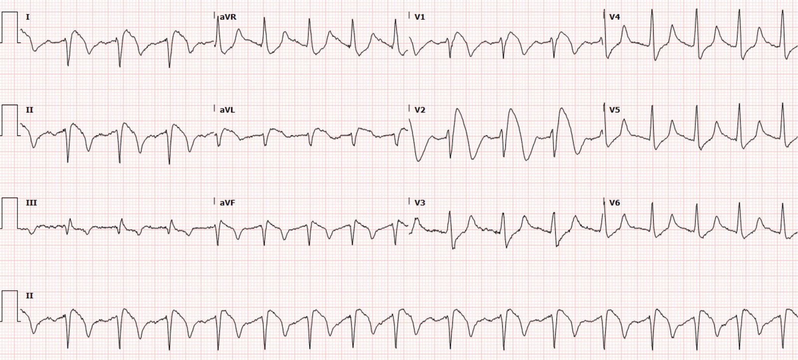
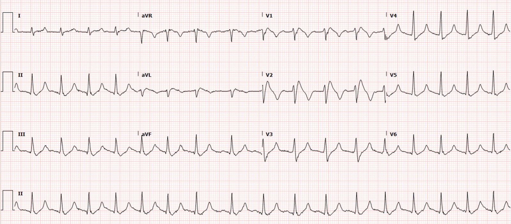
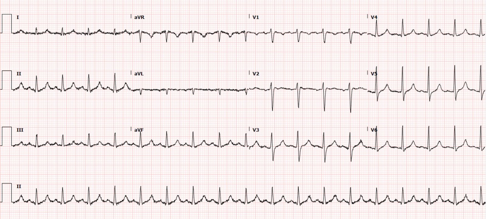
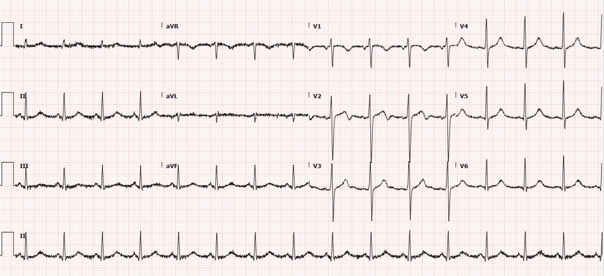
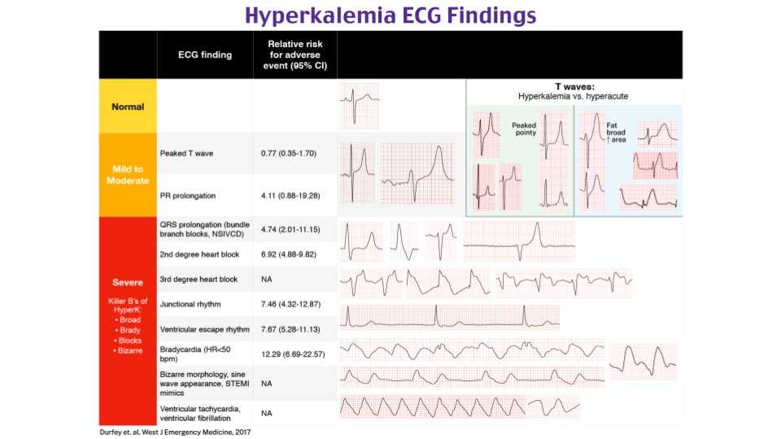
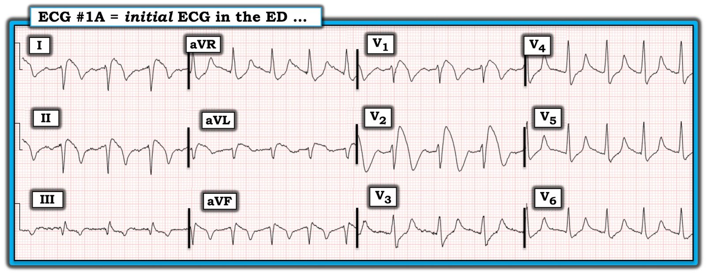
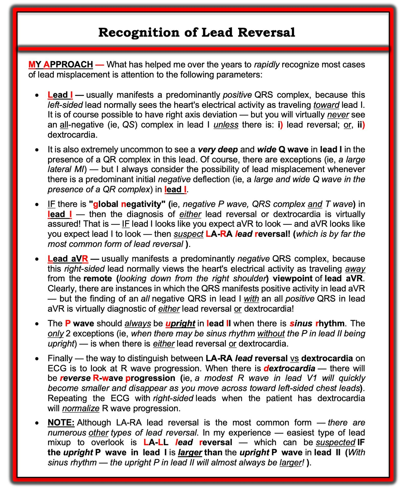
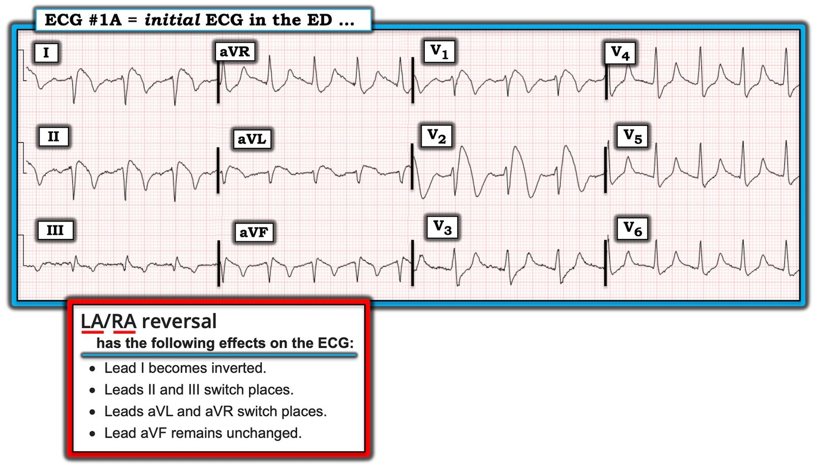
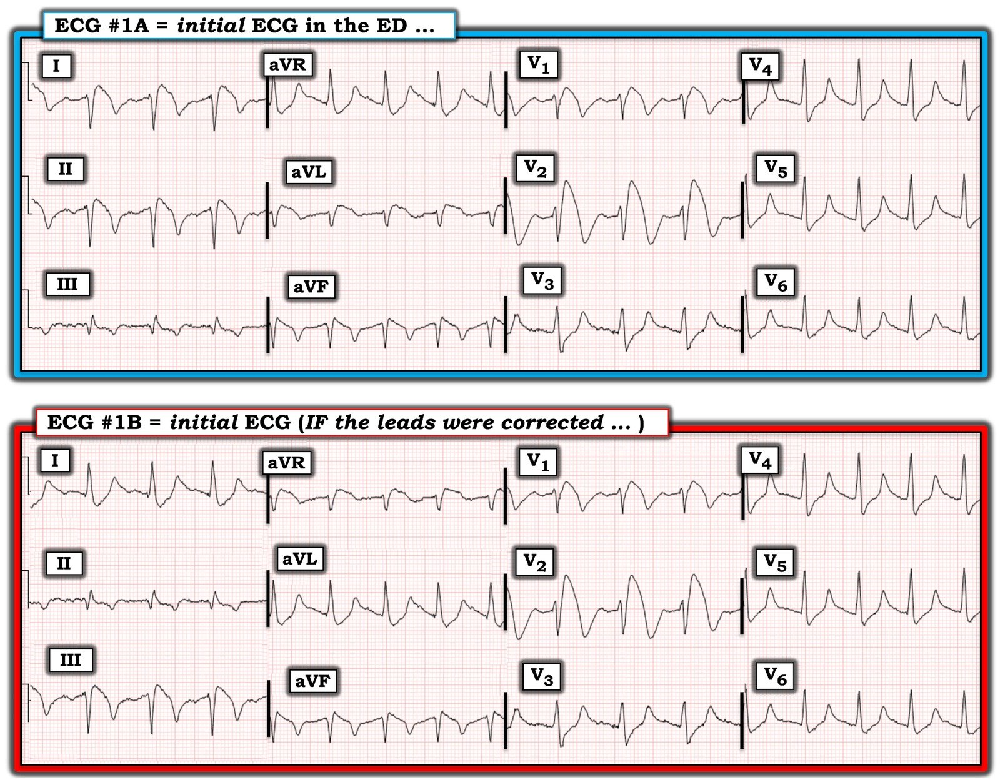

05/05/2022 — Thêm một điện tâm đồ chết người và dễ gây nhầm lẫn. Bạn có còn là một trong rất nhiều người sẽ bị điện tâm đồ này đánh lừa, hay bạn nhận ra nó ngay lập tức?
Bản dịch tiếng Việt của bài "Another deadly and confusing ECG. Are you still one of the many people who will be fooled by this ECG, or do you recognize it instantly?" – Dr. Smith’s ECG Blog. Giữ nguyên toàn bộ 12 hình ảnh của bản gốc.
Gửi bài và viết bởi Destiny Folk MD, bình duyệt bởi Meyers, Smith, Grauer, McLaren
Một người đàn ông đầu độ tuổi 30, không có tiền sử bệnh lý đáng kể, được đội cấp cứu ngoài viện (EMS) đưa đến khoa cấp cứu (ED) sau khi được một người bạn phát hiện trong tình trạng không đáp ứng. Khi EMS đến, bệnh nhân tỉnh táo. Anh than yếu toàn thân và tê chi dưới bên trái. Anh khai đã dùng fentanyl và cocaine 12 giờ trước khi đến viện. Anh kể khó đi lại và cảm thấy như chân trái bị “tê dại”. Anh phủ nhận đau ngực hay khó thở và cho biết hôm qua, trước khi dùng thuốc, anh vẫn cảm thấy bình thường như mọi khi. Khi đến khoa cấp cứu, bệnh nhân bị tụt huyết áp với huyết áp tâm thu khoảng 70 mấy. Đã bắt đầu bù dịch hồi sức.
Đây là điện tâm đồ đầu tiên tại khoa cấp cứu:


Điện tâm đồ cho thấy sóng T nhọn, QRS giãn rộng, đoạn ST dạng vòm (coving) kèm sóng T đảo ngược, rõ nhất ở V1 và V2, phù hợp với hình ảnh Brugada. Cũng thấy ST chênh lên ở I, II, aVF và aVL. ST chênh xuống ở V3-V6 và aVR.
Nhưng dĩ nhiên các điện cực cũng bị đặt sai! Có đảo điện cực chi, nhiều khả năng là đảo LA/RA (xem sơ đồ bên dưới). Bạn có thể nhận ra vì chuyển đạo I trông như bị đảo ngược hoàn toàn, aVR dương, chuyển đạo I có véc-tơ ngược chiều với chuyển đạo lân cận của nó là V6, v.v.

Bất chấp bối cảnh lâm sàng, khoa Tim mạch vẫn được mời hội chẩn vì lo ngại “STEMI”. Họ khuyên ghi lại điện tâm đồ và chờ kết quả troponin vì bệnh nhân không hề đau ngực. Họ cho rằng điện tâm đồ có thể là do nguyên nhân “chuyển hóa”.
Dựa trên các dấu hiệu trên điện tâm đồ đầu tiên và bệnh sử, bệnh nhân được dùng 2 g calci gluconat vì lo ngại tăng kali máu.
Ghi chú của Meyers: 2 g calci gluconat là liều khởi đầu thấp đến trung bình cho tình huống này; tôi nghĩ sẽ cần nhiều hơn để thu hẹp QRS một cách thỏa đáng và điều chỉnh hình thái Brugada.
Đây là điện tâm đồ thứ hai, ghi ngay sau khi bệnh nhân được dùng calci gluconat:


Các điện cực đã được đặt lại đúng, chứng tỏ điện tâm đồ trước có đảo điện cực chi. Hình ảnh Brugada bớt nặng hơn, QRS có thể hẹp lại đôi chút, và độ lệch đoạn ST đã cải thiện phần nào. Nhưng vẫn còn nhiều việc phải làm, và tôi sẽ cho thêm calci ngay lập tức để đưa QRS và hình thái Brugada về bình thường.
Ngay sau điện tâm đồ ghi lại, troponin I độ nhạy cao lần đầu trả về tăng ở mức 551 ng/L. (giới hạn phát hiện = 6 ng/L, giới hạn trên tham chiếu (URL) = 12 ng/L). Troponin I lần hai là 699 ng/L. CPK tăng ở mức 50,291 và K là 7.9 mE/L. Creatinin tăng ở mức 3.09 mg/dL. Dựa trên biểu hiện lâm sàng và kết quả xét nghiệm, tiêu cơ vân được nghi là nguyên nhân gây tăng kali máu. Khoa Tim mạch đồng ý rằng các dấu hiệu trên điện tâm đồ có bản chất chuyển hóa và cho rằng bệnh nhân không cần thông tim cấp cứu dù troponin đang tăng.
Bệnh nhân được truyền vài lít dịch tinh thể và bắt đầu dùng norepinephrine vì tụt huyết áp và suy thận cấp. Bệnh nhân cũng được dùng insulin kèm D50, natri bicarbonat và kayexalate để điều trị tăng kali máu.
Sau khi bắt đầu điều trị tăng kali máu, điện tâm đồ ghi lại cho thấy hình ảnh Brugada đã biến mất:


Điện tâm đồ cho thấy nhịp nhanh xoang. Hình ảnh Brugada trước đó ở V1 và V2 gần như đã biến mất hoàn toàn, nay thực ra chỉ còn hình thái Brugada típ 2 ở V2 với góc beta rộng. QRS hẹp và sóng T bớt nhọn hơn nhiều.
Bệnh nhân được nhập đơn vị hồi sức tích cực (ICU) và được chuyển cấp cứu tới một cơ sở có thể lọc máu cấp cứu, như một phần của việc đánh giá và xử trí tiếp theo. Vì bệnh nhân có đau, tê và hạn chế tầm vận động chi dưới bên trái, khoa chấn thương chỉnh hình được mời hội chẩn. Bệnh nhân được đưa vào phòng mổ cấp cứu để mở cân (fasciotomy) do hội chứng chèn ép khoang. Vài ngày sau, điện tâm đồ ghi lại cho thấy nhịp xoang bình thường, không còn dấu hiệu tăng kali máu:


Sau 3 tuần nằm viện vì suy thận cấp, tăng kali máu và hội chứng chèn ép khoang, bệnh nhân được xuất viện chuyển sang cơ sở phục hồi chức năng cấp.
Những điểm cần học
Chẩn đoán OMI không chỉ đơn giản dựa vào điện tâm đồ. Bối cảnh lâm sàng rất quan trọng, và trong những ca như thế này, nó có thể giúp hiểu được bệnh lý thực sự.
Điều cực kỳ quan trọng là mọi người làm cấp cứu và hồi sức phải hiểu thấu đáo về tăng kali máu và các dấu hiệu của nó trên điện tâm đồ. Tăng kali máu gây sóng T nhọn và “những chữ B chết người của tăng kali máu” (killer B’s of hyperkalemia), gồm nhịp chậm (Bradycardia), phức bộ QRS rộng (Broad QRS), blốc nút AV và blốc nhánh (Blocks), hình thái Brugada (Brugada) và các hình thái kỳ dị khác (Bizarre), kể cả sóng hình sin.
Tăng kali máu giả STEMI và OMI ở nhiều vùng phân bố, nhưng có lẽ thường gặp nhất là hình thái Brugada ở V1-V2, giả OMI thành trước đối với những ai không nhận ra hình ảnh Brugada.
Đảo điện cực chi có thể nhận ra dễ dàng. Xem sơ đồ ở trên.


Các ca tăng kali máu khác giả OMI:
Suy hô hấp cấp: Đọc đúng các dấu hiệu trên điện tâm đồ đầu tiên và các điện tâm đồ liên tiếp, cùng với xử trí tích cực, có thể đã cứu được mạng sống của anh ấy.
“Steve, anh nghĩ gì về điện tâm đồ này ở bệnh nhân ngừng tim?”
Tăng kali máu và ST chênh lên, Bài 1
Một ca bệnh bi thảm, liên quan đến bài trước
Một bệnh nhân đau ngực và ST chênh lên ở V1 và V2
Bạn PHẢI nhận ra hình ảnh này, dù nó không thường gặp
ST chênh lên. Đó là gì?
Hình ảnh điện tâm đồ này đã kể lại câu chuyện khi bệnh nhân không thể
Những ST chênh lên, ST chênh xuống và sóng T cao này là chẩn đoán của bệnh gì?
Thêm một ST "vây cá mập". Kèm một bước ngoặt.
Bạn đã nhận ra điện tâm đồ này chưa?
Blốc nhánh phải kèm ST chênh lên ở V1?
ST chênh lên ở aVL kèm ST chênh xuống soi gương ở các chuyển đạo dưới
Sốc, nhịp chậm, ST chênh lên ở V1 và V2. Kích hoạt phòng thông tim?
Các ca đảo điện cực chi khác:
Một người đàn ông độ tuổi 40 đau thượng vị và điện tâm đồ thay đổi động
Một phụ nữ 32 tuổi đau ngực có điện tâm đồ trước viện
ST chênh lên ở aVL kèm ST chênh xuống soi gương ở các chuyển đạo dưới và ST chênh xuống lan tỏa
Đau ngực và sóng T đảo ngược ở chuyển đạo V2
Các ca tăng kali máu nói chung:
Một người đàn ông độ tuổi 50 bị choáng váng và nhịp chậm
Bệnh nhân khó thở. Bạn được đưa một điện tâm đồ lúc phân loại (triage) mà máy tính đọc là “bình thường”. (Bác sĩ cũng đọc là bình thường)
Sốc nặng, lơ mơ và một điện tâm đồ trước viện có giá trị chẩn đoán. Thêm nữa: Chuyện này xảy ra như thế nào?
Một phụ nữ gần ngất, nhịp chậm và tụt huyết áp
Điều gì xảy ra nếu bạn không nhận ra điện tâm đồ này ngay lập tức?
Một phụ nữ độ tuổi 50 khó thở và nhịp chậm
Một bệnh nhân ngừng tim, tái lập tuần hoàn tự nhiên (ROSC) và blốc nhánh phải (RBBB).
Đây chỉ là blốc nhánh phải thôi sao?
Đây có phải là một blốc nhánh phải đơn thuần?
Một bệnh nhân 60 mấy tuổi mệt mỏi toàn thân không đặc hiệu và trông có vẻ nặng.
Tăng kali máu kèm ngừng tim.
Sóng T nhọn: tối cấp (STEMI) vs. tái cực sớm vs. tăng kali máu
Bạn sẽ làm gì cho bệnh nhân rối loạn ý thức và nhịp chậm này?
Tôi thấy điện tâm đồ máy tính đọc là “bình thường” này trong chồng điện tâm đồ tôi đang đọc
Chẩn đoán là gì?
Được phát hiện hôn mê, điện tâm đồ trước viện ghi “PVC nhịp đôi” và “nhịp nhanh tần số 156”
Một phụ nữ cao tuổi được phát hiện nằm gục, nhịp chậm và tụt huyết áp
Một người đàn ông trung niên ngừng tim không có người chứng kiến
Hãy kiểm tra gần như mọi kỹ năng đọc nhịp trên điện tâm đồ quan trọng nhất của bạn với ca này.
Nhịp xoang với QRS rộng mới xuất hiện
Điện tâm đồ này đặc hiệu chẩn đoán (pathognomonic) và bạn phải nhận ra nó.
Một nhịp nhanh QRS rất rộng. Nhịp gì? Hãy dùng chuyển đạo Lewis!!
Một phức bộ rất rộng
Những sóng T nhọn này có phải là sóng T nền của bệnh nhân?
Nhịp chậm, khó thở (SOB), ở một bệnh nhân lọc máu

===================================
BÌNH LUẬN CỦA TÔI, bởi KEN GRAUER, MD (5/5/2022):
===================================
Nếu được phép đặt 2 Câu hỏi, chỉ dùng duy nhất một điện tâm đồ để đánh giá sự nhạy bén khi đọc điện tâm đồ của người làm cấp cứu — tôi sẽ chọn điện tâm đồ đầu tiên của ca hôm nay (Hình 1). 2 Câu hỏi mà tôi sẽ đặt ra là:
- Câu hỏi #1: Khi không có bất kỳ bệnh sử nào — Những chẩn đoán chính được gợi ý bởi điện tâm đồ ở Hình 1 là gì?
- Câu hỏi #2: Có bằng chứng trên điện tâm đồ của nhồi máu cấp không?


Về các CÂU TRẢ LỜI:
Drs. Folk và Meyers đã đưa ra câu trả lời cho 2 Câu hỏi trên trong phần bàn luận xuất sắc của họ về ca hôm nay. Các câu trả lời đó là:
- Câu hỏi #1 — Điện tâm đồ ở Hình 1 gợi ý: i) Đảo điện cực (rõ ràng là do lẫn điện cực LA-RA); ii) Hình ảnh Brugada típ 1 trên điện tâm đồ (có lẽ là kiểu hình sao chép Brugada — Brugada Phenocopy); và, iii) Tăng kali máu (là ít nhất 1 yếu tố có khả năng góp phần tạo nên hình ảnh Brugada típ 1).
- Câu hỏi #2 — Điện tâm đồ này không gợi ý tình trạng nhồi máu cơ tim cấp.
ĐIỂM THEN CHỐT (PEARL) #1 — Ở Hình 2, tôi tóm tắt những mẹo đã giúp tôi nhiều nhất trong nhiều năm qua để nhanh chóng nhận ra những bản ghi có khả năng bị đảo điện cực.
- Cho đến nay — loại đảo điện cực thường gặp nhất là lẫn điện cực LA (Left Arm — tay trái) và RA (Right Arm — tay phải). Như được nhấn mạnh ở Hình 2 — “manh mối” gợi ý đảo điện cực LA-RA ở Hình 1 — là sự hiện diện của âm toàn bộ — global negativity (của sóng P, phức bộ QRS và sóng T) ở chuyển đạo I.
- Ủng hộ nghi ngờ đảo điện cực LA-RA — là phát hiện ở Hình 1 rằng chuyển đạo I trông giống như ta kỳ vọng ở chuyển đạo aVR — còn chuyển đạo aVR trông giống như ta kỳ vọng ở chuyển đạo I.
- Tăng tiến sóng R bình thường ở các chuyển đạo trước tim loại trừ tim sang phải là nguyên nhân gây âm toàn bộ ở chuyển đạo I.


Vậy điện tâm đồ #1A lẽ ra phải trông thế nào?
Sự hiện diện của đảo điện cực làm phức tạp việc đánh giá điện tâm đồ mà ta đang xem thực sự cho biết điều gì — nhất là khi đảo điện cực không được nhận ra đủ sớm để ghi lại điện tâm đồ ngay lập tức.
- Ở Hình 3 — tôi đính kèm phần tóm tắt mà Drs. Folk và Meyers đã đưa ra ở trên, để làm nổi bật những thay đổi dự kiến do đảo điện cực LA-RA gây ra.
- BẠN có thể nhẩm áp dụng thông tin này cho điện tâm đồ đầu tiên của ca hôm nay không? Lẽ ra điện tâm đồ #1A phải trông thế nào?


ĐIỂM THEN CHỐT (PEARL) #2: Tài liệu tham khảo “tra nhanh” (Quick GO-TO) trực tuyến mà tôi ưa thích nhất cho các kiểu đặt sai vị trí điện cực thường gặp nhất là của LITFL ( = Life-In-The-Fast-Lane). Tôi đã dùng trang web tuyệt vời mà họ đăng trên website của mình về chủ đề này trong nhiều năm. Trang này DỄ tìm — Chỉ cần gõ “LITFL Lead Reversal” vào thanh Tìm kiếm — và đường link sẽ hiện ra ngay lập tức.
- Trang web LITFL này mô tả 7 kiểu đảo điện cực thường gặp nhất. Còn có những khả năng khác (tức là có thể đặt sai nhiều điện cực cùng lúc) — nhưng những trường hợp này ít gặp hơn và khó dự đoán hơn.
- Khi nghi ngờ một kiểu đảo điện cực mà tôi ít quen thuộc — tôi chỉ việc xem lại 7 kiểu đảo điện cực thường gặp nhất trên trang LITFL — và xem liệu có ví dụ nào trong các điện tâm đồ minh họa họ đưa ra có vẻ phù hợp hay không.
- Như đã nói ở trên — đặc điểm nhận diện MẤU CHỐT khiến tôi nghi ngờ đảo điện cực LA-RA ở điện tâm đồ #1A là phát hiện âm toàn bộ của sóng P, phức bộ QRS và sóng T ở chuyển đạo I (do chuyển đạo I bị đảo ngược khi lẫn điện cực LA và RA).
Điện tâm đồ #1A lẽ ra sẽ trông như thế này:
Để so sánh — tôi đã thêm điện tâm đồ #1B vào Hình trước để minh họa điện tâm đồ đầu tiên của ca hôm nay lẽ ra phải trông thế nào nếu các điện cực LA và RA được đặt đúng (Hình 4):


Quay lại với 2 CÂU HỎI Ban đầu của Tôi:
Giờ đây khi đã biết điện tâm đồ đầu tiên của ca hôm nay lẽ ra phải trông thế nào (tức là điện tâm đồ #1B ở Hình 4) — Hãy xem lại 2 Câu hỏi mà tôi đã đặt ra ngay từ đầu phần Bình luận của tôi:
- Đảo điện cực LA-RA — được khẳng định khi phức bộ QRS ở chuyển đạo I trở lại chủ yếu dương. Có ST chênh xuống — nhưng sóng T ở chuyển đạo này nay đã dương. Và dù rất nhỏ — sóng P ở chuyển đạo I nay cũng dương. Cuối cùng — phức bộ QRS ở chuyển đạo aVR nay chủ yếu âm, đúng như dự kiến.
- Một hình ảnh Brugada típ 1 trên điện tâm đồ rất điển hình — thấy ở chuyển đạo V1 và V2 (Xem Hình 5 và phần bàn luận của tôi bên dưới).
- Tăng kali máu đáng kể — được gợi ý mạnh mẽ ở điện tâm đồ #1B vì: i) Sóng T cao, nhọn và có đỉnh sắc ở nhiều chuyển đạo (tức là ở chuyển đạo I, aVL; và từ V3 đến V6); ii) Các chuyển đạo có sóng T đảo ngược cũng có sóng T âm có đỉnh sắc (ĐIỂM THEN CHỐT (PEARL) #3 = Cần biết rằng sóng T đảo ngược trong tăng kali máu nặng cũng có thể có đỉnh sắc!); iii) QRS giãn rộng; iv) Sóng P xoang rất nhỏ (sắp trở thành nhịp xoang-thất, trong đó dù sóng P biến mất khỏi điện tâm đồ — nút SA vẫn tiếp tục hoạt hóa); và, v) ĐIỂM THEN CHỐT (PEARL) #4 = Hình ảnh Brugada típ 1 trên điện tâm đồ là một biểu hiện thường gặp của kiểu hình sao chép Brugada — trong đó hình ảnh Brugada típ 1 biến mất khi K+ huyết thanh được điều chỉnh). Việc hình ảnh Brugada típ 1 biến mất nhanh chóng trong ca hôm nay sau khi K+ huyết thanh về bình thường — ủng hộ mạnh mẽ giả thuyết rằng chúng ta đang thấy kiểu hình sao chép Brugada do tăng kali máu nặng ở điện tâm đồ #1B.
- Không có bằng chứng nào trên điện tâm đồ về nhồi máu cấp! — vì mọi thay đổi ST-T đều có thể dễ dàng giải thích bằng suy thận cấp với K+ huyết thanh = 7.9 mEq/L rất cao — dẫn đến kiểu hình sao chép Brugada với ST chênh lên rất rõ ở chuyển đạo V1,V2. Dù đúng là ta không thể biết đoạn ST và sóng T sẽ trông thế nào cho đến khi K+ huyết thanh được điều chỉnh — không có bằng chứng nào trên điện tâm đồ #1B gợi ý nhồi máu cấp.
==============================
Các hình ảnh Brugada trên điện tâm đồ:
Dù đã gặp bao nhiêu lần các hình ảnh Brugada típ 1 và Brugada típ 2 trên điện tâm đồ — tôi vẫn thấy mình phải xem lại các hình ảnh ở Hình 5:

Về HỘI CHỨNG Brugada so với kiểu hình sao chép (Phenocopy): Chúng tôi đã trình bày nhiều ca có hình ảnh điện tâm đồ Brugada trên Dr. Smith’s ECG Blog. Để đọc một bài tổng quan cập nhật (State-of-the-Art Review) xuất sắc về hội chứng Brugada — Xin XEM bài báo này của Brugada và cs. trên JACC — Tập 72; Số 9; 2018.
- Hình ảnh điện tâm đồ Brugada típ 1 (Type-1) được chẩn đoán khi thấy ST chênh lên ≥2 mm ở một hoặc nhiều chuyển đạo trước tim bên phải (tức là V1, V2, V3) — theo sau là một sóng r’ và đoạn ST dạng vòm hoặc thẳng — trong đó đoạn ST cắt qua đường đẳng điện và kết thúc bằng một sóng T âm (Xem Ô A trong Hình 5).
- Hình ảnh Brugada-1 có thể được ghi nhận một cách tự phát (với chuyển đạo V1 và/hoặc V2 đặt ở vị trí bình thường — hoặc đặt cao hơn thường lệ 1 hoặc 2 khoang liên sườn) — hoặc — hình ảnh Brugada-1 có thể được ghi nhận khi làm nghiệm pháp kích thích bằng thuốc, sau khi tiêm tĩnh mạch một thuốc chẹn kênh natri như ajmaline, flecainide hoặc procainamide.
- LƯU Ý: Trước đây, chẩn đoán hội chứng Brugada không chỉ đòi hỏi có hình ảnh điện tâm đồ Brugada-1 — mà còn cần có tiền sử đột tử, VT bền bỉ, ngất không do phản xạ phế vị, hoặc tiền sử gia đình có người đột tử khi còn trẻ. Định nghĩa này đã được thay đổi sau một hội đồng đồng thuận chuyên gia năm 2013 — vì vậy hiện nay, tất cả những gì cần để chẩn đoán hội chứng Brugada là một hình ảnh điện tâm đồ Brugada-1 tự phát hoặc được gây ra (induced), không cần thêm tiêu chuẩn nào khác.
- Ô B trong Hình 5 minh họa hình ảnh Brugada típ 2 hay dạng “yên ngựa” (Saddle-back) trên điện tâm đồ. Hình ảnh này có thể gợi ý — nhưng không đủ chẩn đoán hội chứng Brugada. Như Dr. Folk và Dr. Meyers đã nêu — hình ảnh Brugada-1 rõ rệt ghi nhận ở chuyển đạo V1,V2 trên 2 điện tâm đồ đầu tiên của ca hôm nay — đã thoái lui chỉ còn tàn dư của hình ảnh Brugada-2 (chỉ còn một sóng r’ nhỏ với góc β rộng) trên điện tâm đồ thứ 3, được ghi sau khi tăng kali máu đã được điều trị.
- ĐIỂM THEN CHỐT (PEARL) #5: Một số tình trạng khác ngoài hội chứng Brugada có thể tạm thời tạo ra hình ảnh điện tâm đồ Brugada-1. Các tình trạng này bao gồm (cùng với những tình trạng khác) — bệnh lý sốt cấp — thay đổi trương lực thần kinh tự chủ — hạ thân nhiệt — thiếu máu cục bộ/nhồi máu/ngừng tim — và tăng kali máu. Bệnh nhân có những tình trạng như vậy, vốn có thể bắt chước thoáng qua các dấu hiệu điện tâm đồ của hình ảnh Brugada-1, được gọi là có kiểu hình sao chép Brugada (Brugada Phenocopy). Tầm quan trọng của việc nhận biết hiện tượng kiểu hình sao chép Brugada này — là việc điều chỉnh tình trạng nền (tức là tăng kali máu trong ca hôm nay) có thể làm hình ảnh điện tâm đồ Brugada-1 biến mất, với tiên lượng tốt hơn nhiều so với bệnh nhân bị hội chứng Brugada thực sự.
==============================
Để xem thêm ví dụ về đảo điện cực:
Các sai sót kỹ thuật với nhiều kiểu đảo vị trí điện cực khác nhau vẫn là một “sự cố” thường gặp đến bất ngờ trong thực hành hằng ngày. Vì vậy — chúng tôi muốn định kỳ đăng các ví dụ lâm sàng về đặt sai vị trí điện cực. Để ôn lại một số ví dụ này — TRUY CẬP:
- Bài đăng ngày 29 tháng Bảy năm 2018 (đảo điện cực LA-RA).
- Bài đăng ngày 11 tháng Hai năm 2020 (đảo điện cực LA-RA).
- Bài đăng ngày 18 tháng Ba năm 2020 (đảo điện cực LA-RA).
- Bài đăng ngày 27 tháng Mười Một năm 2021 (đảo điện cực LA-RA).
- Bài đăng ngày 4 tháng Sáu năm 2018 (đảo điện cực LA-LL).
- Bài đăng ngày 28 tháng Tám năm 2020 (đảo điện cực LA-LL).
- Bài đăng ngày 19 tháng Mười Một năm 2020 (đảo điện cực LA-LL).
- Bài đăng ngày 4 tháng Mười Một năm 2018 (Chuyển đạo V1,V2 đặt quá cao).
- Bài đăng ngày 17 tháng Tư năm 2022 (Chuyển đạo V1,V2 đặt quá cao).
==============================